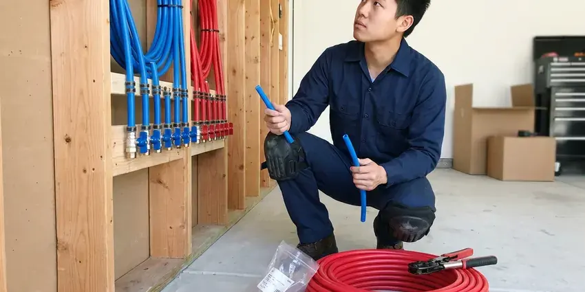

Water Line Installation in Eagle Mountain, UT
Old, corroded or leaking water line in Eagle Mountain, UT? BPK Plumbing runs a new line from the meter to your shutoff.
- Same-Day Leak Response
- Trenchless Options
- Trenching Through Rock and Clay
- Pressure Tested Every Time
Replace That Tired Service Line in Eagle Mountain, UT
We handle locates, permits and inspections, so you do not have to.
New Water Service Lines in Eagle Mountain, UT
BPK Plumbing installs main service lines for new construction, additions and homes whose original pipe has failed. We call in utility locates and trench from the meter or well, lay the pipe on proper bedding, and connect to your shutoff and pressure regulator. Every line is tested before backfill.
Some of what we do:
- Meter, curb stop, PRV and main shutoff connections
- Trenchless boring and traditional trenching
- HDPE service lines with tracer wire

Additional Plumbing Installation Services in Eagle Mountain, UT
We install water heaters, pumps, lines, and fixtures across Eagle Mountain, UT with careful, permitted work that passes inspection the first time.


Customers
Why Choose BPK Plumbing for Water Line Installation in Eagle Mountain, UT?
A water line is a once-in-decades purchase. We treat it like one, with proper depth, clean bedding and full-port valves, and what you get is steady pressure at every fixture and a line that stays tight for the long haul in your Eagle Mountain yard. Repeated patches cost more.
- Clean Restoration, We backfill, compact and regrade so the yard looks the way it did.
- Rock-Ready Crews, Our equipment handles rocky ground and hardpan that stalls ordinary trenching.
- Right Pipe Size, Showers and irrigation stop fighting for pressure once the line is sized right.
Citywide Coverage
No matter where you are in Eagle Mountain, foundation types and lot layouts vary street to street. Slab homes need the line brought up through the slab, while homes with crawlspaces or basements get the line through the foundation wall with a sleeve and a seal that keeps groundwater out. We handle either one.
Experienced Team
Copper, PEX and HDPE each join differently, and the team works with all of them every week. They know which fittings each pipe needs, and they understand how pressure regulators, expansion tanks and softeners tie into a new main so the house side of the job works as well as the yard side. Other crews often skip it.
Safety-First Approach
Trenches deeper than five feet need shoring or a trench box by law. The trench box comes along whenever depth requires it, because a collapsing wall of wet soil can bury a worker in seconds, and no water line is worth that risk on any job in Eagle Mountain. We follow OSHA trench rules.
Trusted Certified Eagle Mountain Plumbing Services Professionals
At BPK Plumbing, we are proud to offer certified plumbing services throughout Eagle Mountain, UT. Credentials matter in this trade. Every repair, install and maintenance visit follows strict safety and quality rules, and the plumbers doing the work carry recognized industry credentials.
Call Us Now PHCC Plumbing Contractor Recognition
PHCC Plumbing Contractor Recognition Better Business Bureau (BBB) Accreditation
Better Business Bureau (BBB) Accreditation Angi Certified Pro
Angi Certified Pro ISO 9001 Quality Management Certification
ISO 9001 Quality Management CertificationThe Water Line Work We Do in Eagle Mountain, UT
Type K Copper Water Line Installation in Eagle Mountain
Type K copper is the thick-walled grade made for burial. It handles high pressure and resists rock punctures, but it costs more than plastic and can corrode in very aggressive soil, so we bed it in clean sand and add protective sleeving anywhere it passes concrete or crosses another utility in Eagle Mountain. Some owners just want metal.

Water Line Installation Cost Comparison in Eagle Mountain, UT
Run length drives most of the cost, followed by soil and pipe material. A short PEX run in soft soil is the cheapest job, while a long copper run through rock costs more in both labor and pipe, and boring under a driveway costs more per foot but saves the concrete repair. We itemize trenching, pipe and restoration.
PEX Water Line Installation in Eagle Mountain
Cross-linked polyethylene, or PEX, bends around corners and tolerates a little ground movement. Higher elevations in and around Eagle Mountain bring colder nights and longer winters, which puts extra load on water heaters and heating systems. We bury it on sand bedding with tracer wire alongside, because PEX is plastic and a locator cannot find it later without that wire on top of the pipe in Eagle Mountain. UV light weakens it.
New Construction Water Service Lines in Eagle Mountain
Meter size sets the upper limit on what any service line can deliver. Most homes need a 3/4 inch or 1 inch line, while larger homes with pools and big irrigation systems often need 1-1/4 inch, so we confirm the meter with your water provider before choosing the pipe for a new build in Eagle Mountain. Going too small is an expensive mistake.
Commercial Water Service Installation in Eagle Mountain
Small commercial buildings usually need a backflow assembly at the meter along with a larger line. We install copper or HDPE sized for the demand, coordinate the tap with the utility, and hand the property manager the inspection and backflow test reports before the line goes into service in Eagle Mountain. Tenants lose water for hours, not days.
Upsizing Water Lines for Better Pressure in Eagle Mountain, UT
Pressure drops when two showers run at once? An undersized 3/4 inch line may be the cause, especially on houses built decades ago that now feed more bathrooms and irrigation than the original plumber ever planned for in Eagle Mountain, UT. We test static and flowing pressure first.
Compliance and Permits for Water Lines in Eagle Mountain
Water heater replacements, gas line work and new bathroom plumbing typically need a permit and an inspection from the local building department. Most towns require a permit and an open-trench inspection on a new or replaced service line. We pull the permit before we dig, and we schedule the inspector so the line is checked for depth, bedding and tracer wire while the trench is still open in Eagle Mountain. Backfilling early means digging twice.

Trenchless Water Line Installation in Eagle Mountain
Pipe pulling replaces the old line by dragging new HDPE through the path it already took. Two small pits get dug, one at each end, attach the new pipe to a cable, and pull it through while a bursting head splits the old pipe out of the way, which leaves your lawn in Eagle Mountain mostly intact. Rock and some soils rule it out.
Water Line Installation Near Me in Eagle Mountain, UT
Searching for water line installation near me in Eagle Mountain turns up plenty of names. Ask each one who does the digging, because a plumber who subcontracts the excavation has less control over bedding and depth than a crew that does both jobs from start to finish. Our crew handles both.
Planned upgrades and urgent replacements both get the same crew in Eagle Mountain, UT. Most residential lines go in over one or two days, plus the wait for utility locates and the inspection, and we give you that full timeline before anyone schedules a machine. Weather can add a day.
BPK Plumbing at a Glance
- Fully licensed plumbing team covering Eagle Mountain, UT
- Same-day appointments and 24/7 emergency response
- Clear written estimates, no hidden fees
- 4.8-star rated by 470+ Utah customers
Eagle Mountain Map
Eagle Mountain Information
- Population
- 56,932
- Area codes
- Local
- Service area
- Eagle Mountain and communities within 40 miles
- Nearby
- Saratoga Springs, Lehi, Herriman, Draper
Soil changes from one lot to the next, so pipe choice and bedding decide how long a water line lasts in Eagle Mountain, UT.
Expert Services
Call BPK Plumbing for reliable plumbing work done by licensed pros in Eagle Mountain, UT.
Our Specialized Plumbing Services in Eagle Mountain, UT
At BPK Plumbing, you get every kind of plumbing service from one company across Eagle Mountain, UT. From leak detection to full system installs, our team works fast and charges fair prices on homes and commercial properties alike. Here are the core services we offer:


How Our Water Line Installation Works in Eagle Mountain, UT
Here is what to expect when we install a water line in Eagle Mountain, UT.
Request a Quote
Call (385) 543-4073 to set up a visit. We look at your current line and hand you an itemized quote with material options.
Site Assessment
We walk the route, note sprinklers and other buried lines and pick the shortest path that avoids concrete and trees.
Permitting & Prep
BPK Plumbing pulls the permit in Eagle Mountain and calls 811. After the locates are marked, we open the trench.
Frequently Asked Questions About Water Line Installation in Eagle Mountain
Most main service lines in Eagle Mountain run $1,500 to $6,000. The price moves with the length, the pipe and the dig method, along with permits and how much lawn, concrete or planting has to be restored after the trench is closed and compacted. Trenchless costs more per foot.
Some homeowners dig their own trench to save money. Connecting to the meter and passing inspection are better left to a licensed plumber, since a bad joint underground can leak for months before anyone notices.
Type K copper, PEX and HDPE are all approved for buried service. The plastic options flex and need fewer joints, while copper gives you rigidity and puncture resistance.
One to three days covers most main line jobs on a typical home in Eagle Mountain. Excavation, pipe, connections and testing all fit inside that window, along with backfill, while long trenches or tight access can stretch the job by a day or more. You get the timeline in writing.
Most jurisdictions require a permit and an inspection for a new or replaced service line. We pull the permit and book the inspection.
Yes, where the ground allows it. We pull a new line through using two small access pits, which spares the lawn and the driveway, though rock and some soil types make it impractical on certain lots in Eagle Mountain. We check before we promise.
Rocky ground can make sewer line and water service repairs more involved, and trenchless methods are often a good fit where digging is tough. Soil that shifts and settles puts steady stress on buried pipe. That is why flexible pipe like PEX gets recommended so often, and why sand bedding and careful backfill matter as much as the pipe itself when the ground around it keeps moving. Sand cushions the line.
Plan on one to three days for most residential mains in Eagle Mountain. How long the run is and how hard the digging goes set the pace, along with weather and how quickly the permit office schedules the inspection that has to happen before the trench gets backfilled. Rock adds time.
What Our Customers Say About Our Plumbing Experts

Nathan E.
Our tankless heater kept throwing an error code and shutting off mid shower. The tech flushed the heat exchanger, which was full of scale, and replaced a bad flow sensor. Hot water has been steady for half a year now.
Water Heater Repair · South Jordan, UT
Angela D.
Our sump pump quit during a storm and the water was an inch from the basement carpet. BPK Plumbing put in a new pump with a battery backup that same evening. We have had two heavy rains since. It kicked on both times.
Sump Pump · Eagle Mountain, UT
Jessica T.
We were adding a gas range in a kitchen remodel and needed a new line run from the meter. The plumber pulled the permit, ran the pipe through the crawl space, and had it inspected and approved within the week.
Gas Line Repair · Draper, UTPatricia H.
We had a slab leak that two other companies could not find. BPK Plumbing located it in under an hour with a listening device. They rerouted the line through the attic instead of breaking up the floor, so we kept our kitchen tile.
Slab Leak Repair · Herriman, UT
James P.
Our restaurant had a slow leak at the hand sink that was rotting the cabinet base. BPK Plumbing came in at six in the morning before prep, replaced the trap and both supply lines, and was packed up before my first cook clocked in.
Commercial Plumbing · Orem, UTDiane F.
My kitchen faucet had dripped for months and I finally got tired of hearing it at night. BPK Plumbing came out the next morning, replaced the cartridge and the O rings, and tightened a loose base that was letting water under the sink.
Faucet Repair · Draper, UT